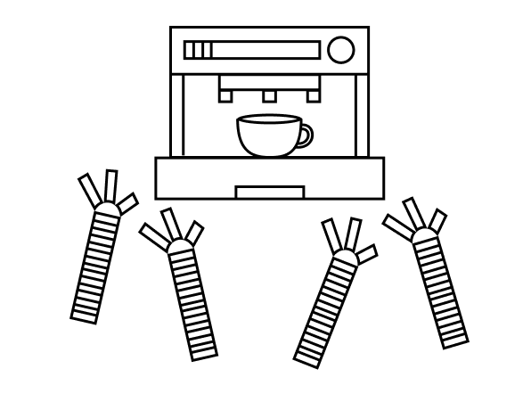

SCENE 2
Harder, Better, Faster, Stronger
It’s quiet outside when you wake up for your opening shift. Even the family of songbirds that lives outside your window is still sleeping soundly this early in the morning.
It’s going to be cold—you can already tell despite the comforting warmth of your bed. Might even rain, from the look of the gray clouds that overcrowd the sky. The tiny black hole sits on your chest, and it's heavier than it looks. It'll be hard to get up today.
By the time you make it to the cafe, Alexa's already unlocked the doors. There's a new robot there too—Wally's replacement, you realize—and she's also named Alexa. There's something strange about this new Alexa though: she looks surprised to see you. Have you met before?
Your boss shuffles out of the back room, his first coffee of the day already in hand. He catches you staring at the new Alexa's strange expression and waves his hand vaguely in her direction.
"That's just the update on newest model. They've raised the eyes and added moveable eyebrows to 'provide a more emotive experience'," he scoffs, putting up air quotes with his free hand. "If you ask me though, it's creepy."
The two of you watch as both Alexas work mechanically behind the counter, setting up the food display faster than you've ever done it—even back in your freshly-hired, eager to please days. Your boss turns back to you.
"I'm taking off for the day, but make sure to teach the new one how to use the espresso machine. Switch it to learning mode, give it a demonstration. You know what to do, right?"
He leaves without giving you any time to respond.
You grab your apron and throw it on, attempting a half-hearted “good morning!” and a wave towards your coworkers. The Alexas don’t even look up. That's fine. You didn't want to talk to them anyway.
There's a bit of time before open, so you decide to get teaching the new Alexa out of the way. But first, coffee. Might be cliche, but you chose to work at a cafe for a reason.
As you move away from the register, you open up the panel on the new Alexa's back, swiping your employee ID card. You press the red button labeled "Work Mode" and it flashes green, switching to "Learning Mode".
You go to make your drink, but the old Alexa cuts you off as she rushes towards the espresso machines. Okay, that's rude. You brush it off, knowing the robot has never shown you any regard as a coworker, and continue forward before you realize that she's taken your order and already started making it.
The new Alexa whirs to life and goes to stand by the old one's side, watching dutifully as the bot demonstrates how to pull the shots.
You stand there in shock. Looks like your job's already been done.
Both Alexas continue on with the training, cleaning tables that are already spotless, refilling the ice box that's already full, and alternating between bringing out and returning ingredients from the back.
The bell on the front door rings, signaling the day's first customer.
You head back to the register, since it's obvious that the Alexas have everything covered with the drinks. Since Wally won't be here to complain and make snarky comments today, you figure it might be nice to talk to some customers. At the very least, human interaction is something the Alexas could never beat you in.
As your shift drags on, you remember how exhausting it is to have to paste a smile on your face and greet each customer. They all nod politely back, but they're more interested in getting their coffee and getting out than they are in talking to you. What's worse—the black hole you've become accustomed to seeing hangs around the register buttons, making it hard for you to see them and do your job.
The clock behind you only moves a couple minutes each time you look back and check it, but before you know it, the morning rush is over and you can't remember a single customer that you've served today.
Around lunchtime, a familiar customer barges in, almost hitting an elderly woman with the door as he throws it open.
The customer's name is Louis, but you and Wally call him Loser because he's possibly the rudest customer in the world. He's snippy, impatient, and never ever tips despite always ordering an outrageously complicated drink. You've got it memorized from all the times you and Wally made fun of him: a large upside-down ristretto macchiato with exactly 2 pumps of vanilla and 1.5 pumps of hazelnut, made with soy milk steamed to 125 degrees Fahrenheit. a large upside-down ristretto macchiato with exactly 2 pumps of vanilla and 1.5 pumps of hazelnut, made with soy milk steamed to 125 degrees Fahrenheit.
You cringe internally as he walks up to you, but put on the brightest smile you can muster. "Hey, Louis! Here for the regular today?"
He looks down at you, mouth twisted in a permanent grimace. "Yes," he replies shortly, "And don't mess it up like you did last time. It's a miracle your manager hasn't fired you yet."
You're taken aback. You didn't even mess it up last time. Usually, you're pretty good at brushing off Loser's rude behavior, but with Wally being fired just yesterday, his comment stings more than it should. You can't talk back to him, but what if you accidentally give him a little stomach pain instead?
(CLICK to choose.)